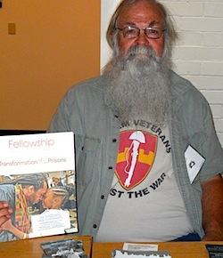

Friends,
After visiting the Vietnam War Memorial in D.C. for the first time, I wrote a poem for one of my buddies memorialized there.
Black Granite Panel 53 W, Row 13
|
The 14 members of the Vietnam Veterans Against the War leaving the Statue of Liberty, which they had occupied for two days. The demonstrators emerged in response to a court order, December 28, 1971. Jim Murphy is second from the right. (Source: Photograph Collection of the American Museum of Immigration, Liberty Island, U.S. Department of the Interior, NPS)
|
Wall Name: ALEXANDER A ROCZEN
Date of Birth: 05/16/1947
Date of Casualty: 07/04/1968
Home of Record: FAIRPORT, NY
Branch of Service: ARMY Co A - 1st Battalion, 8 Infantry Regiment, 4 Infantry Division
Rank: PFC
Casualty Country: SOUTH VIETNAM
Casualty Province: KONTUM
The wall doesn't tell us about his parents,
his twin sister Alexandria... a younger sister Nancy and a
brother Kenneth...
a mother who grieves to this day... his father, a decorated WWII
hero who never forgave himself...
That he had freckles everywhere...
That he had a really goofy smile...
a big gap in his front top teeth...
that he wasted his time and money trying to shave,
that he thought getting to third base with a girl was holding her
hand...
when we caddied, he always got the really fat guy with a 40
handicap...
on the football field he was the gutsiest,
his uniform the dirtiest,
that he would go out of his way to help anyone...
The record doesn't tell us that it was his first month in-country
... in the Army barely 6 months.
And 41 other guys died on July 4th 1968...
|

Jim Murphy tabling at an event on behalf of VFOR.
|
Memorial Day is a sad but necessary day for veterans and their families. It's a time when we remember the poignant sacrifice of the lives of men and women who served in the American armed forces -- our compatriots and friends.
It's also a time when we reflect on the pain and cost of war for vets and our families, and for civilians caught in the midst of horrific violence.
I served with the 1st MOB and the 1972 CS in Vietnam in 1966 and 1968. I was stationed at Quang Tri City (MACV), DaNang, Khe Sanh, and with VNAF at the LaVang VAFB. Soon after returning home in 1969 to heal and get physical therapy at Walter Reed's Forest Glen Center and the Irving Street (D.C.) VA Center, I became aware of Vietnam Vets Against the War and the Fellowship of Reconciliation.
I've been advocating for veterans, and against the unethical pursuit of war ever since.
Currently, I coordinate Veterans Fellowship of Reconciliation, a new and growing chapter of FOR-USA that continues to develop counter-recruitment programs and advocacy for Iraq and Afghanistan veterans. We send soft-cover books to incarcerated soldiers to assist in the formation of "healing groups." We've recently launched a new program that provides short-term food relief to young veterans living on the edge. Because the VA is overwhelmed with the needs of the veterans of the American wars of the past 12 years, we hope to share our model project with other veterans' organizations.
Help support Veterans FOR by making a donation to FOR-USA.
|
Iraq War veterans Nathan Lewis, left, and Jon Hausrath make paper using pulp made from military uniforms during a workshop with the Combat Paper Project at NineOneTwo Studio. (Source: John Carrington/Savannah Morning News)
|
We also actively support the healing of veterans from the ravages of war through the Post Traumatic Press and Combat Paper.
PTP is a small independent press founded in 2000 by Dayl Wise in order to give voices to veterans and noncombatants whose lives have been affected by the trauma of war. With a belief in the power of words to heal, PTP is dedicated to the survivors of war and to those who work for peace and justice.
The Combat Paper Project takes military uniforms, cuts them up and beats them into a pulp to form sheets of paper. Veterans use the transformative process of papermaking to reclaim their uniforms as art and express their experiences with the military and warfare.
Here is one such story.
Nathan Lewis, Iraq Veteran and Combat Paper Press author
|
Nathan Lewis. (Source: Combat Paper Project)
|
I joined the Army straight out of high school. September 11, 2001, was my second day of boot camp. The towers fell and we knew the drill sergeants were right; war was just around the corner. The small town of Barker, New York, where I grew up, hung yellow ribbons on all the trees to honor the many young service members from the area. My picture hung in the center of the school, surrounded by flags. I was proud to be a soldier. I felt I was doing good things for my country -- until I deployed to Iraq in the initial invasion of 2003.
My short tour changed me forever. All through the war I had a small rat of doubt gnawing at my gut. I doubted that the war was about freedom, democracy or national security. That unmistakable look of fear and helplessness on the Iraqis' faces told me differently.
CHARLIE BATTERY by Nathan Lewis
Charlie Battery Has Places To Go.
Charlie Battery has places to go.
That's why we cruise at 60,
all 20 of our trucks
like a green snake.
Charlie Battery has Iraqi's to liberate…
The engine noise, a late night, no music
I'm lulled asleep
I wake when we slow to a crawl
Ahead on the right another green snake
Bravo Battery stopped, everyone dismounted
I recognize a driver
He's standing there smoking and joking
At the head of the snake a very different scene
Soldiers and civilians in a big group
All sweating and screaming
A mother wails and claws at her face
Blood and dirt cover the front of her Abaya
My insides are grinding
Guthrie says "Shit" and I see the kid
A skinny boy, maybe 8 years old
His face is covered with a jacket
I stare at his dirty bare feet
Later, back home, when asked by fools and children
Did you see any action?
I always want to tell them
But I never saved the courage to tell
About this sort of action
Rumors whispered by the Bravo boys
Between tobacco spits and drags
And boot heals digging nonsense pattern in the sand
They tell a sad story
Bravo Battery had places to go
That's why they cruise at 60
Water or Skittles are thrown from truck
Water or Skittles bounce back into road
Hungry and fearless kid gives chase
We pass and wind back up to 60
Charlie Battery has places to go...
On Monday, we will gather at our local memorial with verse, poetry and music to quietly remember all of the losses caused by war. We will sing the music of Pete Seeger, a WWII veteran and peace worker, recite the poetry of Fred Madeo, a WWII veteran and a VFOR member and remember what they have left behind for us... a message of peace and hope.
Please support FOR's mission "to organize, train, and grow a diverse movement that welcomes all people of conscience to end structures of violence and war, and create peace through the transformative power of nonviolence."
It is a mission to save the lives of our sons and daughters and to provide for the well-being of all generations to come.
Make a donation to FOR to support our work.
Wouldn't it be wonderful to memorialize acts of love and kindness, and to draw poetry solely from natural wonders and the depth of the human heart?
Jim Murphy
Veterans Fellowship of Reconciliation
FOR-USA National Council |